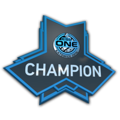
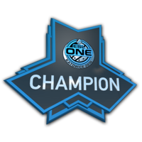

História
A Na'Vi foi fundada em 18 de dezembro de 2009. Após o colapso do time ucraniano KerchNET, os antigos jogadores foram apoiados pelo organizador de torneios de esports Murat "Arbalet" Tulemaganbetov. O novo time ganhou o nome de "Arbalet UA". Sua line up era composta por Danylo "Zeus" Teslenko, Ivan "Edward" Sukharev, Sergey "starix" Ischuk, Arseniy "ceh9" Trynozhenko e Yegor "markeloff" Markelov.
Valeriy "B1t" Vakhovskiy.
Suas habilidades de jogo fizeram dele um dos jogadores mais procurados da indústria, atraindo a atenção de fãs e organizações.
Função: AWPer.
Naturalidade: Ucraniano.
MVP: 14 vezes.
Denis "electroNic" Sharipov was born in Kazan in 1998.
Atingiu duas vezes os 10 melhores jogadores,
de acordo com a HLTV.
Função: AWPer.
Naturalidade: Ucraniano.
MVP: 14 vezes.
Oleksandr "s1mple" Sasha Kostyliev.
Atualmente é considerado o melhor jogador do mundo.
Função: AWPer.
Naturalidade: Ucraniano.
MVP: 14 vezes.
Ilya "perfecto" Zalutskiy's.
Perfecto é uma estrela talentosa e em ascensão no mundo do Counter-Strike: Global Offensive (CS:GO).
Função: AWPer.
Naturalidade: Ucraniano.
MVP: 14 vezes.
Andrii "Npl" Kukharskyi.
Ele é conhecido por sua pontaria excepcional e estilo de jogo agressivo, o que o ajudou a se estabelecer como um dos melhores jogadores do cenário.
Função: AWPer.
Naturalidade: Ucraniano.
MVP: 14 vezes.